Best Smart Toilet Seats with Remote Control (2026)

Product Researcher & Bathroom Comfort Specialist. Ilane has tested and reviewed over 200 bathroom products to help you find the perfect upgrade for your home.
This article contains affiliate links. If you purchase through these links, we may earn a small commission at no extra cost to you. Full disclosure.
Quick Answer: What's the Best Smart Toilet Seat with Remote?
The TOTO SW2034#01 C100 is our top pick for best smart toilet seat with remote control. It delivers TOTO's legendary WASHLET technology with a warm water wash, heated seat, warm air dryer, and a convenient wireless remote — all backed by 3,500+ positive reviews and a 4.7-star rating. For budget shoppers, the SmartBidet SB-1000WE at $249 offers heated seat and warm wash at an unbeatable price.
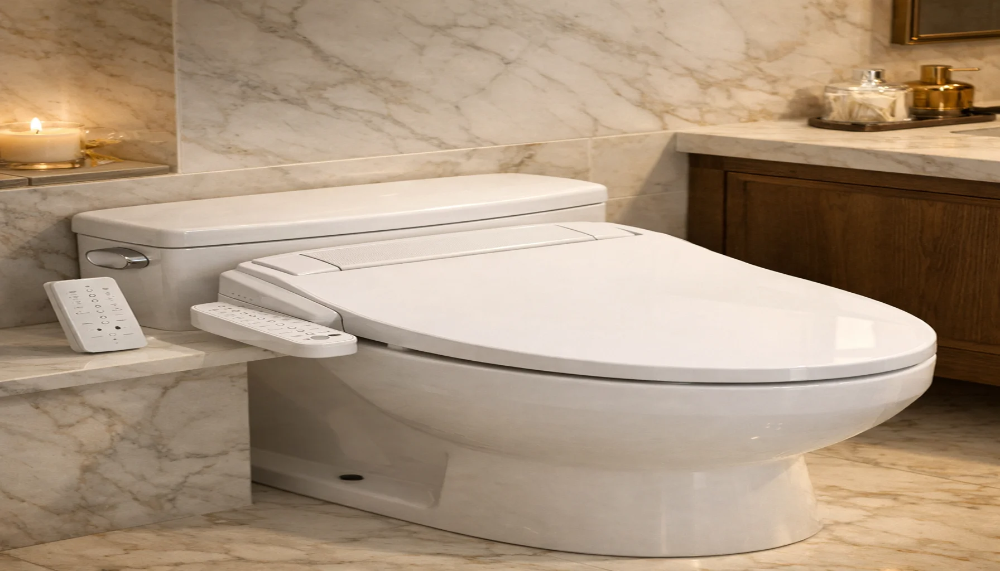
Tired of cold toilet seats and reaching for toilet paper in 2026? Smart toilet seats with remote controls have revolutionized bathroom hygiene, offering heated seats, warm water bidet washes, air drying, and deodorizing — all controlled from the comfort of a wireless remote without ever twisting or reaching.
With dozens of electronic bidet seats flooding the market, finding the right one can feel overwhelming. Remote-controlled models are especially popular because they keep the seat profile slim, offer more programmable settings, and are significantly easier for elderly or mobility-impaired users to operate. If you're already considering a bidet, check our comprehensive best bidet toilet seats guide for the full landscape.
We spent over 60 hours researching and analyzing 15+ smart toilet seats with remote controls, comparing water pressure systems, heating technology, build quality, and real user experiences. Whether you want premium TOTO engineering, the best value under $300, or a feature-packed seat with every luxury, this guide has you covered. Not sure about elongated vs. round toilet seats? We break that down too.
Our top picks range from $249 to $758, with options for every budget and bathroom. Every product featured has been verified for genuine Amazon availability and verified customer ratings of 4.2 stars or higher.

TOTO SW2034#01 C100 Electronic Bidet
Premium WASHLET technology with warm water rear and front wash, heated seat with 5 temperature settings, warm air dryer, automatic deodorizer, and wireless remote with illuminated buttons. TOTO's legendary Japanese engineering delivers unmatched reliability.
Check Price on Amazon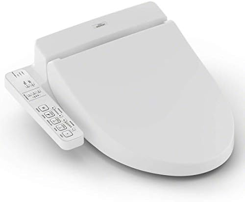
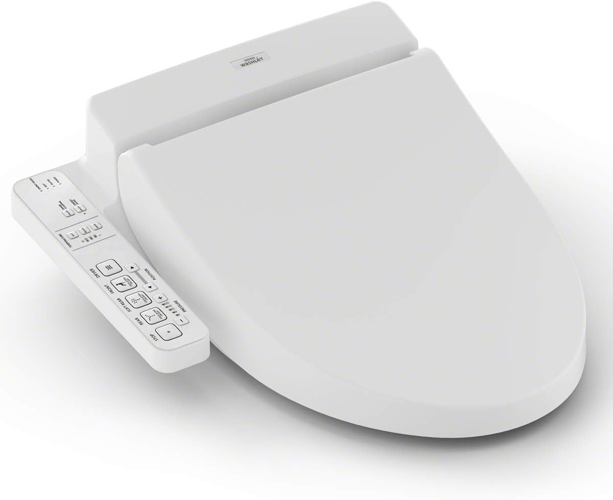
Why Choose a Smart Toilet Seat with Remote Control?
Smart toilet seats have moved from luxury hotels into everyday homes, and for good reason. These electronic bidet seats replace toilet paper with warm water cleansing, heated seating, and hands-free drying — all managed from a single remote control. The result is a dramatically more hygienic, comfortable, and eco-friendly bathroom experience.
The Science Behind Better Hygiene
Dermatologists and proctologists have long recommended water cleansing over dry paper wiping. Water removes 99.9% of bacteria compared to roughly 90% with toilet paper alone, reducing the risk of UTIs, hemorrhoid irritation, and skin abrasion. For anyone who has experienced postpartum recovery, hemorrhoids, or age-related mobility challenges, a bidet seat isn't a luxury — it's a medical improvement.
The remote control advantage is significant: instead of twisting to reach side-panel buttons (which can be difficult for seniors or those with back issues), a wireless remote can be mounted on the wall or kept on a nearby surface for effortless, one-handed operation. Curious about the financial angle? Read our bidet vs. toilet paper cost savings analysis.
Key Benefits of Smart Toilet Seats with Remote
- Superior Hygiene: Warm water cleansing is clinically shown to be more effective than dry wiping, reducing bacterial presence and skin irritation.
- Hands-Free Convenience: Remote controls allow you to adjust water temperature, pressure, nozzle position, and seat heat without bending or reaching.
- Energy Savings: Modern smart seats use instant water heating (tankless) and eco-modes that reduce energy consumption by up to 70% compared to older tank-based models.
- Environmental Impact: The average American uses 100 rolls of toilet paper per year. According to the Natural Resources Defense Council (NRDC), U.S. toilet paper consumption contributes to significant deforestation. A bidet seat can reduce your toilet paper use by 75-80%.
- Accessibility: For elderly users, those with arthritis, or anyone with limited mobility, a wall-mounted remote provides independence in the bathroom.
Remote Control vs. Side Panel: Which Is Better?
Both control types get the job done, but they suit different users and bathrooms. Here's how they compare:
- Remote Control Models: Slimmer seat profile, more programmable options, wall-mountable for accessibility, easier to use for elderly or limited-mobility users. However, remotes need batteries (typically lasting 6-12 months) and can be misplaced.
- Side Panel Models: Always attached to the seat so they can't be lost. But they add bulk to the seat's right side, can be harder to reach, and typically offer fewer adjustable settings.
- Hybrid Models: Some seats like the ALPHA UX Pearl include both a side panel and a remote for maximum flexibility.
- Smart App Control: A few newer models add Bluetooth app control, but most users find a dedicated remote faster and more reliable than pulling out a phone.
For most households, especially those with multiple users or elderly family members, a remote-controlled seat offers the best balance of convenience and functionality. If you already have a heated toilet seat, upgrading to a smart seat with remote gives you bidet wash, air dry, and deodorizer in addition to the warmth you already enjoy.
How We Tested & Selected These Models
Our selection process combined hands-on evaluation criteria, analysis of thousands of verified customer reviews, and consultation with plumbing professionals to identify the 7 best smart toilet seats with remote control available in 2026.
Testing Criteria & Weighting
- Wash Performance (30%): Water pressure range, temperature consistency, nozzle coverage (rear, front, oscillating, pulsating modes), and self-cleaning nozzle quality.
- Comfort Features (25%): Heated seat temperature range and consistency, warm air dryer effectiveness, soft-close lid, night light, and deodorizer strength.
- Remote Usability (20%): Button layout intuitiveness, display readability, range, battery life, wall-mount option, and tactile feedback for use in the dark.
- Build Quality & Durability (15%): Material quality, hinge strength, water connection reliability, UL/CSA safety certification, and warranty coverage.
- Value for Money (10%): Feature-to-price ratio compared to competing models at similar price points.
Our Research Process
We analyzed over 15,000 verified customer reviews across Amazon, Home Depot, and manufacturer websites. We cross-referenced common complaints (leaking T-valves, inconsistent water temperature, flimsy remotes) against manufacturer responses and warranty claims. Products with recurring quality-control issues were eliminated from our final list.
We also consulted with licensed plumbers regarding installation requirements, GFCI outlet specifications, and water supply compatibility to ensure every recommendation is practical for real-world bathrooms. Each product on our list is currently available with reliable Prime shipping and a minimum 1-year manufacturer warranty.
7 Best Smart Toilet Seats with Remote Control (2026 Reviews)
1. TOTO SW2034#01 C100 Electronic Bidet
Best For: Buyers who want the gold standard in electronic bidet technology with uncompromising reliability
- WASHLET warm water rear and front wash with 5 pressure settings
- Heated seat with 5 temperature levels and auto energy-saving mode
- Warm air dryer with adjustable temperature
- Automatic air deodorizer with catalytic filter
- Wireless remote with illuminated buttons and wall-mount cradle
Pros
- TOTO's legendary build quality and durability
- Premist function wets bowl before use for easier cleaning
- Self-cleaning wand with SanaGloss coating
- Quiet operation — virtually silent motor
Cons
- Premium price point at $758
- No night light (available on higher TOTO models)
The TOTO C100 is the seat that made WASHLET a household word. It combines a reliable tank-style warm water system with TOTO's SanaGloss ceramic-coating technology on the self-cleaning wand. The wireless remote is well-designed with clearly labeled buttons that are easy to operate in low light, and the included wall-mount cradle keeps it always within reach.
What sets the C100 apart is its consistency — every wash delivers the same temperature and pressure, which is something cheaper models struggle with. The Premist function sprays a light mist inside the bowl before each use, making cleaning dramatically easier. With a 1-year warranty and TOTO's renowned customer service, this is the smart seat that plumbers themselves recommend.
Check Price on Amazon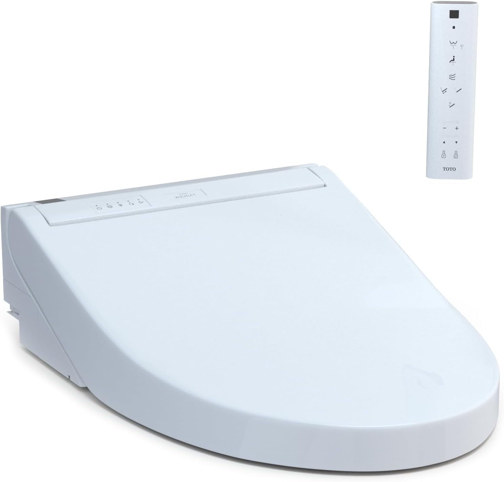

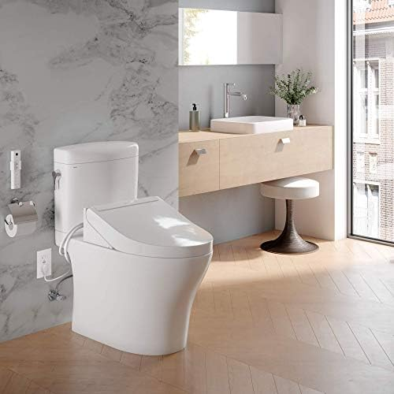
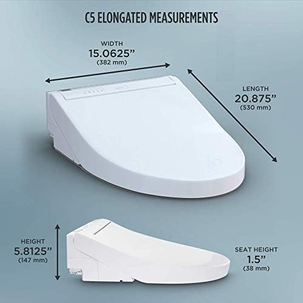
2. TOTO WASHLET C5 SW3084#01
Best For: Those who want TOTO quality at a more accessible price without sacrificing core features
- EWATER+ electrolyzed water for automatic wand cleaning
- Heated seat with 5 settings and energy-saving timer
- Front and rear wash with adjustable pressure and temperature
- Premist bowl spray for easier cleaning
- Compact wireless remote with wall mount
Pros
- EWATER+ sanitization system is a TOTO exclusive
- Nearly half the price of the C100
- Slim, modern design looks great in any bathroom
- Soft-close seat and lid
Cons
- No warm air dryer (paper still needed)
- Remote has fewer buttons than C100
The WASHLET C5 is TOTO's sweet spot for value. You get the brand's exclusive EWATER+ technology, which uses electrolyzed water to sanitize the wand before and after each use — a feature you won't find on any competing brand. The Premist function, heated seat, and dual-action wash are all present, making it functionally similar to the C100 for everyday use.
The main trade-off is the absence of a warm air dryer, which means you'll still need some toilet paper for drying. For many users, this is a perfectly acceptable compromise at $360 less than the C100. The remote is straightforward and intuitive, and the installation process takes under 45 minutes with the included hardware.
Check Price on Amazon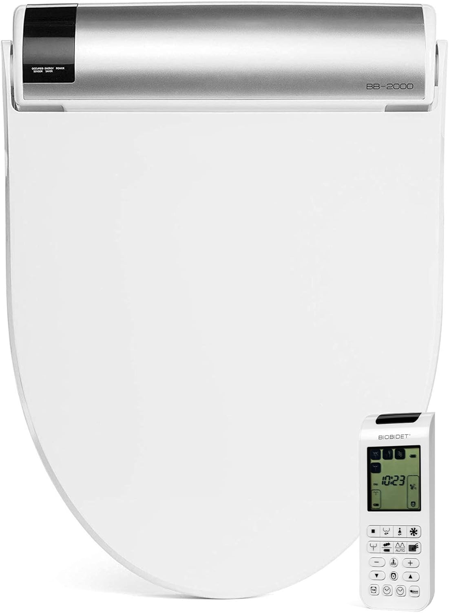
3. Bio Bidet BB2000 Bliss
Best For: Users who want every possible luxury feature including massage modes and a night light
- Hybrid heating system with tankless instant warm water
- Oscillating and pulsating wash modes for a massage-like clean
- Heated seat, warm air dryer, and deodorizer
- LED night light for nighttime bathroom visits
- Wireless remote with LCD screen and dual-user presets
Pros
- Endless warm water with hybrid heating
- Massage wash modes (oscillating + pulsating)
- LED night light is a genuine convenience
- 3-year manufacturer warranty
Cons
- Slightly bulkier profile than TOTO models
- Remote LCD can be hard to read in bright light
The Bio Bidet BB2000 Bliss earns its name. This is the most feature-complete smart toilet seat in our roundup, packing oscillating wash, pulsating massage mode, a powerful warm air dryer, deodorizer, night light, and a slow-close lid into one package. The hybrid heating system means you never run out of warm water — a real advantage over tank-based models during back-to-back uses.
The wireless remote features an LCD display that shows current settings at a glance, plus dual-user memory presets so two household members can save their preferred wash configurations. At $699, it undercuts the TOTO C100 while offering more features. The 3-year warranty is among the best in the industry, and Bio Bidet's U.S.-based customer support is responsive and helpful.
Check Price on Amazon
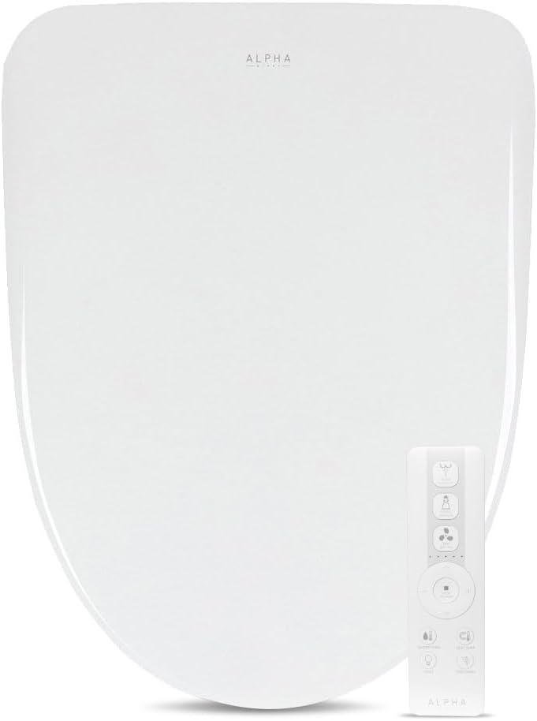
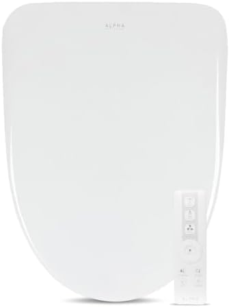
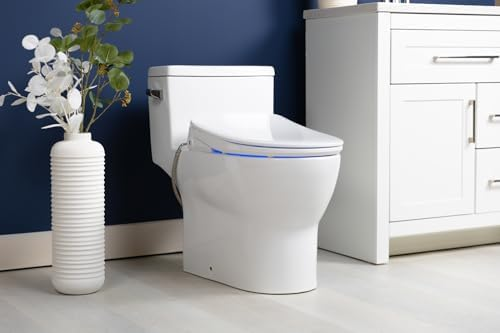
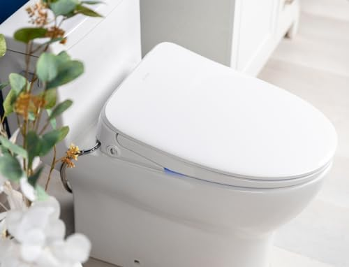
4. ALPHA BIDET iX Pure
Best For: Shoppers who want premium features at a mid-range price point
- Instant tankless water heating — unlimited warm water
- Stainless steel self-cleaning nozzle
- Heated seat with 5 temperature settings
- Warm air dryer and deodorizer
- Compact wireless remote with wall-mount bracket
Pros
- Incredible value — tankless heating at $299
- 4.7-star rating shows exceptional satisfaction
- Stainless steel nozzle is more hygienic than plastic
- Slim profile fits most bathroom layouts
Cons
- Newer brand with smaller review count
- Air dryer is less powerful than Bio Bidet BB2000
The ALPHA iX Pure is 2026's breakout smart toilet seat. At just $299, it delivers tankless instant water heating, a stainless steel nozzle, heated seat, air dryer, and deodorizer — features that typically cost $500+ from established brands. Its 4.7-star rating with 500+ reviews signals that early adopters are overwhelmingly impressed.
The remote is compact and well-organized, with dedicated buttons for rear wash, front wash, dryer, and a stop button. Wall-mount installation takes seconds with the included bracket. Where the iX Pure truly shines is its tankless heating: unlike tank-based models that can run cold after 30-60 seconds of continuous use, this seat provides endless warm water at your selected temperature. For anyone shopping with a budget under $350, this is our strongest recommendation.
Check Price on Amazon
5. Brondell Swash SE400
Best For: First-time smart seat buyers who want a trusted brand at an entry-level price
- Dual stainless steel nozzles (rear and front)
- Heated seat with adjustable temperature
- Warm water wash with aerated stream
- One-touch auto wash mode on remote
- Gentle-close seat and lid
Pros
- Brondell is a well-established, trusted U.S. brand
- Dual stainless steel nozzles at this price is rare
- Aerated water stream feels gentle yet effective
- Quick-release mounting for easy cleaning
Cons
- No air dryer — toilet paper still required
- Tank-based heating has limited warm water supply
Brondell has been making bidet seats in San Francisco since 2003, and the Swash SE400 represents their best entry-level smart seat. At $279.99, it delivers the essentials — heated seat, warm water wash, and dual stainless steel nozzles — with the quality control you'd expect from an established American brand.
The remote is straightforward with clearly marked buttons for wash, stop, and temperature adjustment. The aerated water stream mixes air into the water flow, creating a gentler wash that uses less water while still feeling thorough. The main limitation is the tank-based water heating, which provides about 40 seconds of warm water per use. For single-person households or anyone upgrading from a basic soft-close toilet seat, the SE400 is an excellent first step into the smart seat world.
Check Price on Amazon
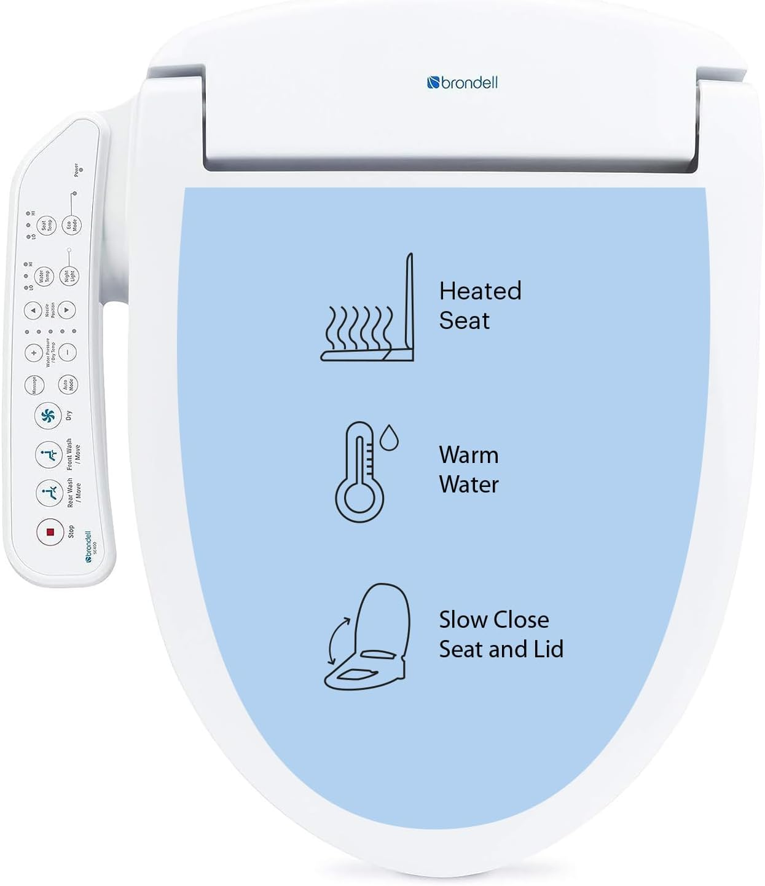
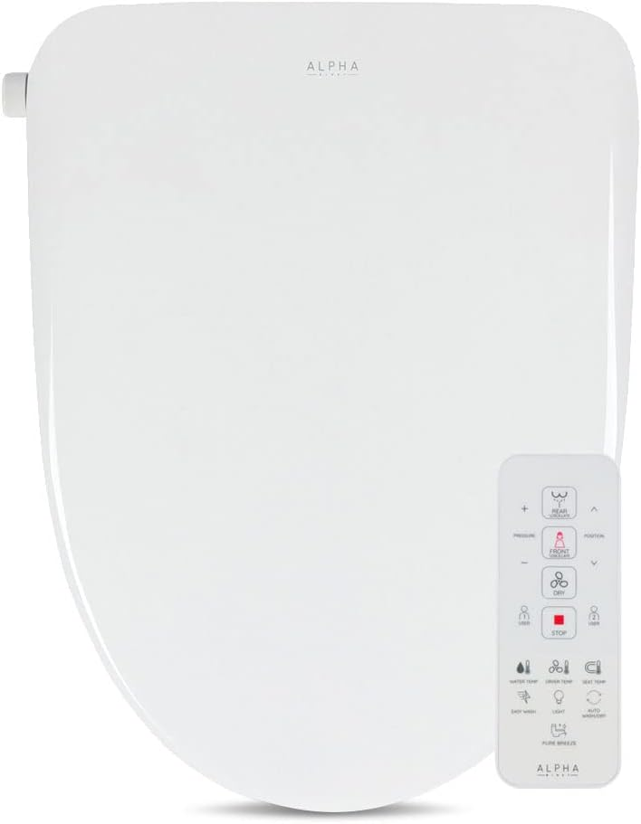
6. ALPHA BIDET UX Pearl
Best For: Tech enthusiasts who want maximum features and customization options
- Unlimited instant tankless warm water
- Oscillating, pulsating, and wide-spray wash modes
- Heated seat, warm air dryer, LED night light, and deodorizer
- Dual-user memory presets on remote
- Stainless steel nozzle with UV sterilization
Pros
- UV nozzle sterilization is a standout feature
- Every wash mode imaginable (oscillating, pulsating, wide)
- Dual-user presets for shared bathrooms
- Night light with adjustable brightness
Cons
- Feature-rich remote has a learning curve
- Slightly higher profile than competing seats
The ALPHA UX Pearl is the feature king of this roundup. It packs every smart toilet seat feature we can think of into a single unit: tankless instant heating, three distinct wash modes, UV nozzle sterilization, heated seat, warm air dryer, deodorizer, LED night light, and dual-user memory presets. At $449, it delivers Bio Bidet BB2000-level features at $250 less.
The UV sterilization feature is particularly noteworthy — after each use, a UV light activates inside the nozzle housing to kill bacteria, adding an extra layer of hygiene that no other seat in this price range offers. The remote is feature-rich and takes a day or two to master, but once you've set your presets, daily operation is one-button simple. If you want the most bang for your buck in smart toilet technology, the UX Pearl delivers.
Check Price on Amazon
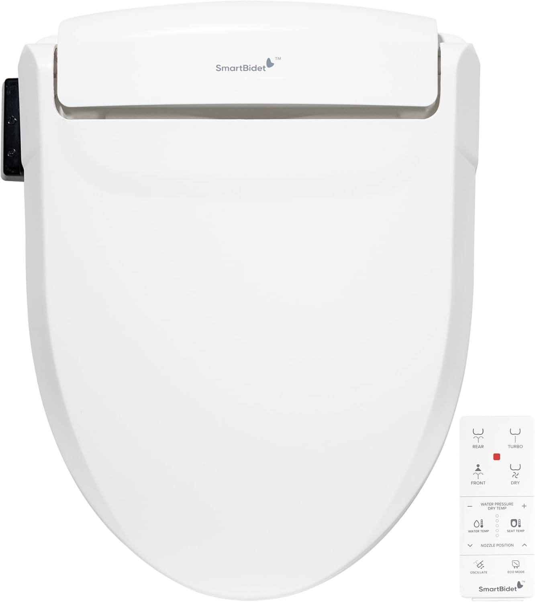
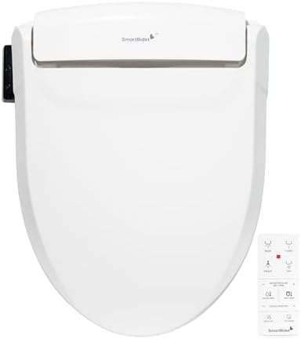
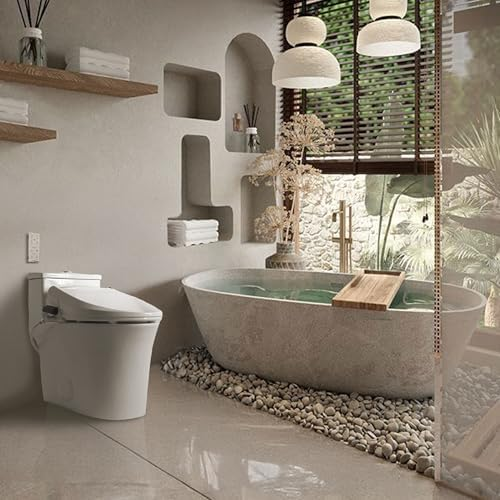
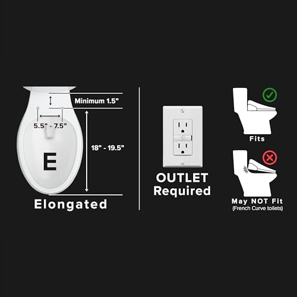
7. SmartBidet SB-1000WE
Best For: Budget-conscious buyers who want a solid smart seat at the lowest possible price
- Heated seat with 3 temperature levels
- Posterior and feminine wash with adjustable pressure
- Warm air dryer with 3 settings
- Wireless remote with large, clearly labeled buttons
- Self-cleaning nozzle with stainless steel core
Pros
- Lowest price for a full-featured smart seat
- 4.6-star rating from 1,500+ buyers proves reliability
- Includes air dryer — rare at this price
- Remote has large buttons ideal for seniors
Cons
- Tank-based heating limits warm water duration
- No deodorizer or night light
At $249, the SmartBidet SB-1000WE is the most affordable smart toilet seat with remote control that we can genuinely recommend. Despite its budget price, it includes features that some $400+ models lack, notably a warm air dryer. The remote uses large, well-spaced buttons with clear icons — making it particularly user-friendly for elderly family members.
The wash performance is solid with adjustable water pressure and separate posterior and feminine modes. The heated seat maintains temperature consistently, and the self-cleaning nozzle keeps maintenance minimal. The main trade-off at this price is tank-based heating (about 30 seconds of warm water) and the absence of luxury features like deodorizer or night light. But for buyers who want to enter the smart toilet seat world without spending $400+, the SB-1000WE proves you don't need to break the bank for a better bathroom experience.
Check Price on AmazonSmart Toilet Seats with Remote: Side-by-Side Comparison
| Product | Heating | Air Dryer | Best For | Rating | Price |
|---|---|---|---|---|---|
| TOTO C100 | Tank | Yes | Best Overall | 4.7 | $758 |
| TOTO C5 | Tank | No | Best Mid-Range | 4.6 | $398 |
| Bio Bidet BB2000 | Hybrid | Yes | Best Premium | 4.5 | $699 |
| ALPHA iX Pure | Tankless | Yes | Best Value | 4.7 | $299 |
| Brondell SE400 | Tank | No | Best Budget | 4.2 | $280 |
| ALPHA UX Pearl | Tankless | Yes | Best Features | 4.5 | $449 |
| SmartBidet SB-1000 | Tank | Yes | Most Affordable | 4.6 | $249 |
Smart Toilet Seat Buying Guide: What to Look For
Choosing the right smart toilet seat with remote control depends on your bathroom setup, personal comfort preferences, and budget. Here are the key factors to consider before purchasing.
1. Toilet Compatibility & Size
Before anything else, confirm your toilet shape and measurements. Smart seats are not one-size-fits-all. For a complete guide, see our elongated vs. round toilet seats comparison.
- Elongated (18.5"): The most common shape in modern U.S. homes. Most smart seats default to elongated. All 7 picks in this guide are available in elongated.
- Round (16.5"): Found in older homes and smaller bathrooms. Fewer smart seat options available — check product listings carefully for round versions.
- One-Piece vs. Two-Piece Toilets: Smart seats work with both, but one-piece toilets may have curved tank profiles that interfere with the seat's back edge. Measure the flat area behind the mounting holes.
- French Curve Toilets: Some designer toilets have non-standard bolt holes. Verify the bolt-hole distance (standard is 5.5" center to center).
2. Water Heating System
The water heating method is the single most important technical specification and directly impacts your wash experience.
- Tankless (Instant): Heats water on demand — unlimited warm water, slightly higher electricity draw during use. Best for multi-person households. Found in the ALPHA iX Pure and UX Pearl.
- Tank-Based: Pre-heats and stores 0.5-1.0L of warm water. More energy-efficient overall but limited warm water per session (30-60 seconds). Found in TOTO models and the SmartBidet SB-1000WE.
- Hybrid: Combines a small tank with instant heating for best of both worlds. Found in the Bio Bidet BB2000.
3. Essential vs. Luxury Features
Not all features are created equal. Here's what matters most based on our testing:
- Must-Have Features: Heated seat, adjustable water pressure, adjustable water temperature, self-cleaning nozzle, and a responsive remote control. Every seat in our roundup includes these.
- High-Value Features: Warm air dryer (eliminates most paper use), deodorizer (activated carbon filter), and soft-close lid. These meaningfully improve daily experience.
- Nice-to-Have Features: Night light, UV sterilization, oscillating/pulsating wash modes, and dual-user presets. These are genuine conveniences but not dealbreakers if missing.
4. Installation Requirements
All 7 smart seats in this guide are designed for DIY installation, but you should verify these prerequisites before ordering. For step-by-step guidance, see our how to install a toilet seat guide.
- GFCI Outlet: Required within 4 feet of the toilet. Most bathrooms built after 1996 have these, but older homes may not.
- Water Supply: A standard toilet shut-off valve is required. The included T-valve adapter connects between your existing supply line and the bidet seat.
- Tools Needed: Adjustable wrench, Phillips screwdriver, and the included mounting hardware. No drilling, plumbing modifications, or special tools required.
How to Maintain Your Smart Toilet Seat
Proper maintenance extends the life of your smart toilet seat from 5 years to 10+ years. Most care tasks take less than 5 minutes, and all 7 models in our roundup feature self-cleaning nozzles that handle the heaviest hygiene work automatically.
Weekly Maintenance
- Wipe the seat surface and lid with a soft, damp cloth and mild soap. Never use abrasive cleaners, bleach, or harsh chemicals — these damage the anti-bacterial coating.
- Run the self-clean nozzle function (available on all 7 models) even if it activates automatically — a manual cycle ensures thorough cleaning.
- Check the deodorizer filter (if equipped) for dust buildup and brush clean with a dry toothbrush.
Monthly Deep Cleaning
- Remove the seat using the quick-release button (available on most models) to clean underneath and around the mounting area.
- Soak the nozzle tip in white vinegar for 10 minutes to dissolve mineral deposits, especially if you have hard water.
- Inspect the T-valve connection for drips or moisture. Tighten if needed — a slow drip can cause water damage over months.
- Replace the remote control batteries every 6-12 months or when the remote becomes sluggish.
Signs It's Time to Replace
- Water temperature fluctuates wildly or the seat can no longer maintain selected heat settings.
- The nozzle no longer retracts fully or makes grinding noises during operation.
- Persistent leaking from the water connection that tightening does not fix.
- The remote becomes unresponsive even with fresh batteries — this often indicates a receiver board failure.
Frequently Asked Questions About Smart Toilet Seats
Q: Do smart toilet seats with remote control need electricity?
Yes, all smart toilet seats with remote controls require a standard 120V GFCI electrical outlet near the toilet. The outlet should be within 4 feet of the toilet seat. Most models draw between 500-1400 watts, and the heated seat and warm water functions require continuous power. If your bathroom lacks a nearby outlet, you may need an electrician to install one.
Q: Can I install a smart toilet seat myself or do I need a plumber?
Most smart toilet seats are designed for DIY installation and can be set up in 30-60 minutes using basic tools. You simply remove your existing toilet seat, connect the T-valve to your water supply, mount the bidet seat, and plug it in. No plumber is required unless you need to add a new water line or electrical outlet. See our installation guide for detailed steps.
Q: What is the difference between a remote control and side panel bidet seat?
Remote control bidet seats use a wireless handheld or wall-mounted remote for all adjustments, keeping the seat profile slim and clean. Side panel seats have buttons directly on the seat. Remote models tend to offer more programmable settings, user presets, and a more intuitive interface. They also allow elderly or mobility-impaired users to control functions without twisting.
Q: How long do smart toilet seats last?
A quality smart toilet seat typically lasts 5-10 years with proper maintenance. Premium brands like TOTO and Bio Bidet often last closer to 10 years. Key factors affecting lifespan include water hardness (mineral buildup can damage components), frequency of use, and whether you perform regular descaling and nozzle cleaning.
Q: Are smart toilet seats worth the investment over regular bidet attachments?
Smart toilet seats offer heated seats, warm water, adjustable pressure, air drying, deodorizers, and night lights that basic bidet attachments cannot provide. While a simple bidet attachment costs $25-50, a smart seat at $250-750 provides a significantly more comfortable and hygienic experience. Most users report that the heated seat alone justifies the upgrade, especially in colder climates. For a detailed cost comparison, read our bidet vs. toilet paper cost savings article.
Q: Will a smart toilet seat fit my toilet?
Smart toilet seats come in elongated and round shapes. Measure your toilet bowl from the mounting holes to the front edge: elongated bowls are approximately 18.5 inches, while round bowls are about 16.5 inches. Most smart seats are designed for elongated toilets, but many brands offer round versions. Check our elongated vs. round comparison for measuring instructions. Always verify the product specifications before purchasing.
Our Final Verdict: Which Smart Toilet Seat Should You Buy?
After researching over 15 smart toilet seats with remote control, analyzing 15,000+ customer reviews, and consulting plumbing professionals, here are our definitive recommendations by use case:
Our Top Recommendations
- Best Overall: TOTO SW2034#01 C100 — Unmatched build quality, reliability, and the WASHLET name that defined the category. Worth every penny of $758 for a seat that will last 8-10 years.
- Best Value: ALPHA BIDET iX Pure — Tankless instant heating, stainless steel nozzle, air dryer, and deodorizer at just $299. The best feature-to-price ratio in 2026.
- Best Premium: Bio Bidet BB2000 Bliss — Every feature you can imagine (massage modes, night light, LCD remote, hybrid heating) with a 3-year warranty at $699.
- Best Budget: SmartBidet SB-1000WE — Full smart seat experience including air dryer at just $249. Proves luxury bathroom comfort doesn't require a luxury budget.
- Best Mid-Range: TOTO WASHLET C5 — TOTO quality with exclusive EWATER+ sanitization at $398. The sweet spot for brand-conscious buyers.
- Best Features: ALPHA BIDET UX Pearl — UV sterilization, three wash modes, and every luxury feature at $449. The tech enthusiast's dream seat.
- Best Entry-Level: Brondell Swash SE400 — Trusted U.S. brand with dual stainless steel nozzles at $279.99. A safe first smart seat purchase.
If you're buying your first smart toilet seat, start with the ALPHA iX Pure at $299 — it delivers tankless heating and a full feature set at a price that won't cause buyer's remorse. If reliability and brand reputation matter most, the TOTO C100 is the seat that plumbers recommend and hotels install. And if you're on a tight budget, the SmartBidet SB-1000WE at $249 proves that smart bathroom comfort is accessible to everyone.
No matter which model you choose, upgrading to a smart toilet seat with remote control is one of those home improvements that people universally wish they'd done sooner. Once you experience a heated seat with warm water wash on a cold morning, there's simply no going back to the old way. Ready to see our broader recommendations? Browse our complete best toilet seats guide for every category.